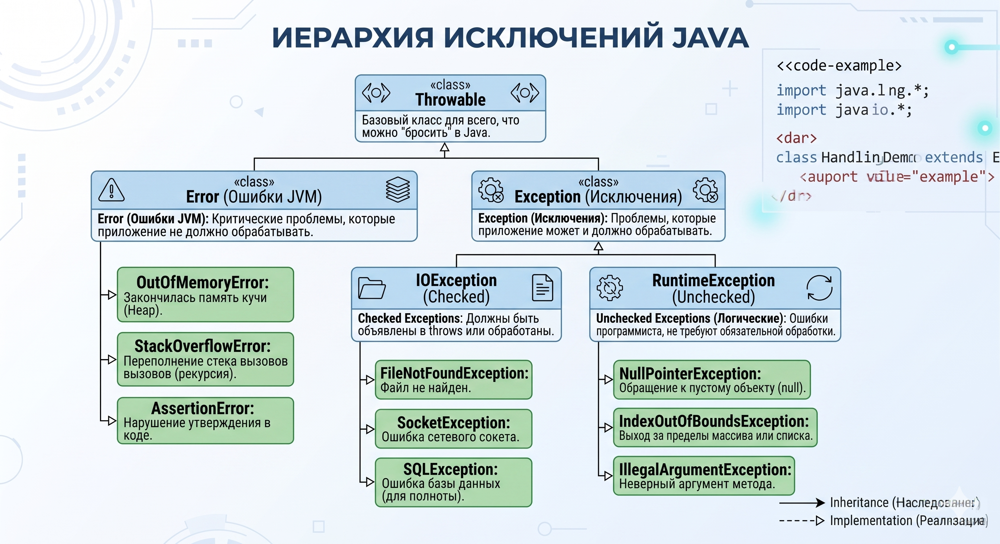

Исключения (Exceptions)¶
Иерархия исключений Java¶

Вся иерархия исключений в Java берёт начало от одного класса — Throwable. Это базовый класс для всего, что можно "бросить" (throw) и "поймать" (catch) в Java. От него отходят две принципиально разные ветки.
Две ветки: Error vs Exception¶
Error — Ошибки JVM (не для нас)¶
Error — это критические проблемы на уровне JVM или операционной системы, которые приложение не должно пытаться обработать. Когда возникает Error, JVM сигнализирует: "Всё кончено, я не могу продолжать работу нормально". Ловить их через try-catch — плохая практика.
Типичные представители:
OutOfMemoryError— закончилась память Кучи (Heap). Подробно разбирали в теме JVM → OOM.StackOverflowError— переполнение стека вызовов (бесконечная рекурсия).AssertionError— нарушение утверждения (assert) в коде.
Exception — Исключения (наша зона ответственности)¶
Exception — это проблемы, которые приложение может и должно обрабатывать. Они делятся на два лагеря, и разница между ними — один из топ-вопросов на собеседованиях.
Checked vs Unchecked (Главный вопрос собеса)¶
Checked Exceptions (Проверяемые)¶
Наследники Exception, кроме RuntimeException и его потомков.
- Главное правило: Компилятор принудительно требует их обработки. Если метод может бросить checked exception, ты обязан либо обернуть вызов в
try-catch, либо объявить его в сигнатуре черезthrows. - Философия: Checked exceptions — это ожидаемые внешние проблемы, которые случаются не из-за бага в коде, а из-за внешнего мира. Файл может не существовать, сеть может упасть, база данных может быть недоступна. Java говорит: "Я предупреждаю тебя заранее — подумай, что делать в этой ситуации."
Типичные представители (ветка IOException):
FileNotFoundException— файл не найден.SocketException— ошибка сетевого соединения.SQLException— ошибка при работе с базой данных.
// Компилятор не пустит без try-catch или throws
public void readFile(String path) throws IOException {
FileReader reader = new FileReader(path); // бросает FileNotFoundException
}
Unchecked Exceptions (Непроверяемые)¶
Наследники RuntimeException.
- Главное правило: Компилятор не требует их обработки. Ты можешь ловить их — но не обязан.
- Философия: Это ошибки программиста — баги в логике, которых не должно быть в нормальном коде. Обращение к
null, выход за пределы массива, неверный аргумент. Компилятор не может предусмотреть все такие случаи, поэтому они "на совести" разработчика.
Типичные представители:
NullPointerException— обращение кnull-ссылке.IndexOutOfBoundsException— выход за пределы массива или списка.IllegalArgumentException— методу передан некорректный аргумент.IllegalStateException— вызов метода в неправильном состоянии объекта.ClassCastException— некорректное приведение типов.ArithmeticException— например, деление на ноль.
Полная таблица¶
| Error | Checked Exception | Unchecked Exception | |
|---|---|---|---|
| Базовый класс | Error |
Exception (не RuntimeException) |
RuntimeException |
| Причина | Критический сбой JVM/ОС | Ожидаемая внешняя проблема | Баг в логике программиста |
| Компилятор требует обработки? | ❌ Нет | ✅ Да | ❌ Нет |
Ловить через catch? |
Крайне редко (почти никогда) | Да, обязательно | По необходимости |
| Примеры | OutOfMemoryError, StackOverflowError |
IOException, SQLException |
NPE, IndexOutOfBoundsException |
Обработка исключений: try-catch-finally¶
Базовая конструкция¶
try {
// Код, который может бросить исключение
String content = readFile("data.txt");
} catch (FileNotFoundException e) {
// Конкретная ошибка — обрабатываем первой
log.error("Файл не найден: {}", e.getMessage());
} catch (IOException e) {
// Более широкая ошибка — обрабатываем второй
log.error("Ошибка чтения: {}", e.getMessage());
} finally {
// Выполнится ВСЕГДА — и при ошибке, и без неё
closeResources();
}
Порядок catch имеет значение
Более специфичные (дочерние) исключения должны идти перед более общими (родительскими). Если поставить catch (IOException e) перед catch (FileNotFoundException e), код не скомпилируется — компилятор скажет, что второй блок недостижим.
Когда finally НЕ выполнится?¶
Это любимый вопрос-засыпка:
- Если вызвать
System.exit(0)— JVM убивается принудительно. - Если произошёл
OutOfMemoryErrorили сбой самой JVM. - Если поток был убит снаружи через
Thread.stop()(deprecated).
try-with-resources (Java 7+) — Современный подход¶
Вместо того чтобы вручную закрывать ресурсы в finally, используй try-with-resources. Он автоматически вызывает close() у всех ресурсов, которые реализуют AutoCloseable.
// Старый способ — многословный и опасный (можно забыть закрыть)
FileReader reader = null;
try {
reader = new FileReader("data.txt");
// ...
} finally {
if (reader != null) reader.close();
}
// Современный способ — чисто и безопасно
try (FileReader reader = new FileReader("data.txt");
BufferedReader br = new BufferedReader(reader)) {
String line = br.readLine();
// reader и br закроются автоматически в обратном порядке
}
Правило
В современном коде finally для закрытия ресурсов — антипаттерн. Всегда используй try-with-resources.
Кастомные исключения¶
Когда создавать свои?¶
Кастомные исключения нужны, когда хочешь:
- Нести доменный смысл —
OrderNotFoundExceptionговорит больше, чемRuntimeException("Order not found"). - Добавить контекст — передать
orderId,userIdи другие данные для логирования. - Разграничить слои — не пропускать
SQLExceptionиз репозитория в контроллер.
Checked или Unchecked для своих?¶
// Checked — если вызывающий код ОБЯЗАН обработать этот случай
public class InsufficientFundsException extends Exception {
private final BigDecimal required;
private final BigDecimal available;
public InsufficientFundsException(BigDecimal required, BigDecimal available) {
super("Недостаточно средств: требуется %s, доступно %s"
.formatted(required, available));
this.required = required;
this.available = available;
}
// геттеры...
}
// Unchecked — если это баг или неожиданное состояние (Spring-стиль)
public class OrderNotFoundException extends RuntimeException {
public OrderNotFoundException(Long orderId) {
super("Заказ не найден: id=" + orderId);
}
}
Правило в Spring-приложениях
В Spring-экосистеме принято использовать Unchecked (Runtime) исключения. Это снижает "шум" в сигнатурах методов и избавляет от бесполезных throws на каждом уровне стека. Checked исключения из JDK (вроде IOException) оборачиваются в unchecked на границе инфраструктурного слоя.
Обработка исключений в Spring¶
@ControllerAdvice и @ExceptionHandler¶
В Spring MVC не нужно обворачивать каждый контроллер в try-catch. Вместо этого — централизованный обработчик ошибок.
@RestControllerAdvice
public class GlobalExceptionHandler {
@ExceptionHandler(OrderNotFoundException.class)
@ResponseStatus(HttpStatus.NOT_FOUND)
public ErrorResponse handleOrderNotFound(OrderNotFoundException ex) {
return new ErrorResponse(ex.getMessage(), "ORDER_NOT_FOUND");
}
@ExceptionHandler(InsufficientFundsException.class)
@ResponseStatus(HttpStatus.PAYMENT_REQUIRED)
public ErrorResponse handleInsufficientFunds(InsufficientFundsException ex) {
return new ErrorResponse(ex.getMessage(), "INSUFFICIENT_FUNDS");
}
// Fallback для всего непойманного
@ExceptionHandler(Exception.class)
@ResponseStatus(HttpStatus.INTERNAL_SERVER_ERROR)
public ErrorResponse handleGeneric(Exception ex) {
log.error("Неожиданная ошибка", ex);
return new ErrorResponse("Внутренняя ошибка сервера", "INTERNAL_ERROR");
}
}
Антипаттерны при работе с исключениями¶
// ❌ Глотать исключение — худший грех
try {
riskyOperation();
} catch (Exception e) {
// ничего не делаем — баг навсегда скрыт
}
// ❌ Логировать И пробрасывать — дублирование в логах
catch (Exception e) {
log.error("Ошибка", e);
throw e; // в логах будет два стектрейса об одной ошибке
}
// ❌ Ловить Exception или Throwable без причины
catch (Exception e) { ... } // слишком широко — ловим всё подряд
// ✅ Правильно: ловить конкретное, логировать один раз, пробрасывать с контекстом
catch (IOException e) {
throw new FileProcessingException("Не удалось обработать файл: " + path, e);
}
Никогда не теряй cause
При оборачивании исключения всегда передавай оригинал вторым аргументом: new MyException("message", originalException). Иначе теряется стектрейс — и отладка превращается в детективное расследование.